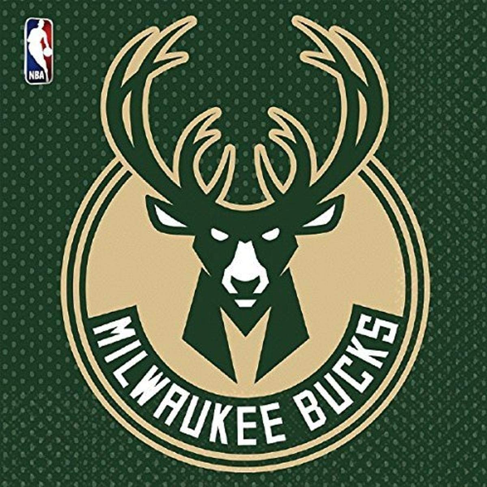

Milwaukee Bucks (en idioma español: Ciervos de Milwaukee) es un equipo de baloncesto de la NBA con base en Milwaukee, Wisconsin. Disputa sus partidos como local en el Fiserv Forum desde la temporada 1988-89. Ganó el campeonato de la NBA en 1971 contando en sus filas con dos de los más grandes jugadores de la historia de la NBA, Oscar Robertson y Lew Alcindor (posteriormente conocido como Kareem Abdul-Jabbar).
La llegada de Lew Alcindor revolucionó completamente al equipo, que pasaron a un récord de 56-26; curiosamente, la temporada anterior acabaron 26-56. Con el segundo mejor récord de la liga después de los New York Knicks, los Bucks vencieron a Philadelphia 76ers en primera ronda de playoffs, para caer ante los Knicks en semifinales. Ese año, Alcindor consiguió el Rookie of the Year.
Para la siguiente temporada, los Bucks consiguieron a Oscar Robertson (apodado Big O) desde Cincinnati Royals. La pareja fue absolutamente letal, con Big O liderando desde el perímetro y Alcindor desde la pintura, los Bucks consiguieron un récord de 66-16, el segundo mejor de aquel año y el mayor de la historia de la franquicia. Los Bucks dominaron los playoffs, con un 12-2 de parcial, venciendo a los Baltimore Bullets en las Finales de la NBA, consiguiendo el primer y único campeonato de su historia, y siendo la franquicia más precoz desde su creación en ganar el anillo.
Los Bucks siguieron su dominio en los primeros años de los 70, sería por aquellos años cuando Alcindor cambió su nombre a Kareem Abdul-Jabbar tras su conversión al Islam. En la 1971-72, los Bucks llegaron a las Finales de conferencia, aunque esta vez fueron vencidos por Los Angeles Lakers de Jerry West, Wilt Chamberlain y compañía. De nuevo fueron finalistas de la NBA en la 1973-74, pero esta vez cayeron ante los Boston Celtics. Es, hasta ahora, su última participación en unas Finales de la NBA. Para la 1974-75, la retirada de Robertson y una lesión de Jabbar arrastró a los Bucks al pozo de la clasificación, con un récord de 38-44. Para 1975, Jabbar afirmó su deseo de no seguir en el equipo de Milwaukee, exigiendo su traspaso al equipo de una gran ciudad, principalmente Los Ángeles o Nueva York. Finalmente sería traspasado a los Lakers.
Los Milwaukee Bucks fueron creados en enero de 1968, cuando la NBA llevó el baloncesto a la ciudad de Milwaukee, en Wisconsin. El primer partido oficial de los Bucks fue contra los Chicago Bulls, siendo la 1968-69, la primera en la historia de la franquicia. Su primera victoria vendría en el séptimo partido, contra los Detroit Pistons, por 134-118. Únicamente pudieron ganar 26 partidos en la temporada, pero eso les permitió conseguir la primera posición para el draft de 1969, donde escogerían a un universitario llamado Lew Alcindor.
 Indice
Indice